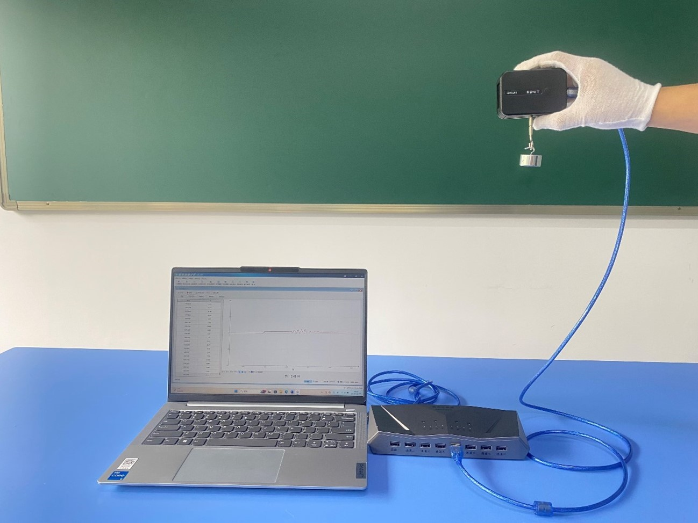
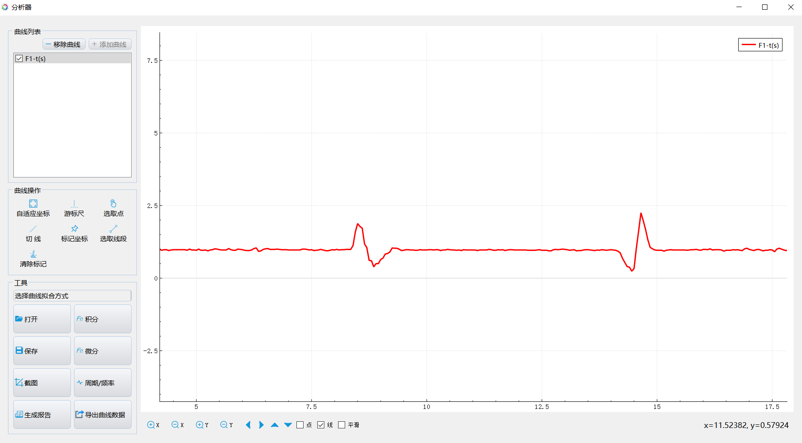

实验二十 研究超重和失重现象
【实验目的】
通过实验观察分析超重失重现象。
【实验原理】
物体对支持物的压力（或对悬绳的拉力）大于物体所受重力的现象叫作超重；物体对支持物的压力（或对悬绳的拉力）小于物体所受重力的现象叫作失重。
【实验器材】
数据采集器、力传感器、50g钩码一盒、计算机等。
【实验装置】

【实验操作步骤】
1.搭建好实验环境，打开实验数据分析软件，连接好数据采集器和力传感器，将力传感器“调零”；
2.将钩码挂到力传感器的测量钩上，持力传感器与钩码静止不动，观察力传感器窗口的读数曲线情况；
3.用手握住力传感器，使力传感器和钩码在竖直方向上下加速运动，观察传感器窗口的读数变化情况。
4.用手握住力传感器，缓慢地使力传感器和钩码在竖直方向上作上下匀速运动，观察传感器窗口的读数变化情况。

超重失重曲线
【思考与讨论】
1.根据实验步骤3、4得到的图像，结合钩码的运动情况，总结超重失重现象发生的条件；
2.物体处于超重失重状态时，是其本身的重量（物体受到的重力大小）发生了变化吗？
【自由探究】
本实验中，我们研究的都是物体在竖直方向运动时的情况，如果物体不是沿竖直方向（如水平运动或运动方向与水平方向成一夹角）运动，还会发生超重失重现象吗？试设计实验证明你的观点。